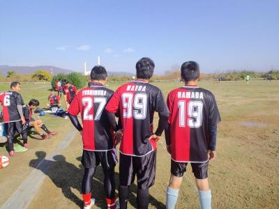

初対外試合お疲れ様でした！
点を決めれたのはよかったのですが、
代償を得てしまいました(涙)
明日病院行ってきます(笑)
もっと皆とプレーしたかったです(泣)
復活の際は、宜しくお願いします！
ユウちゃん
ナイスサイド突破でした！
ベンチより勇姿を見届けてました！
皆さん、お疲れ様でした。
初めての対外試合、一緒に練習している仲間と共に戦えて楽しかったです～。
練習時でもそうですが、「ナイッシュー!!!」や「ドンマイ!!!」という声が聞こえる度に、これこそがこのチームの特徴だなぁと改めて感じました。
だからこそ、一緒にプレーする時間が増える程に、質の良いチームになっているのだろうと思います(^.^)
今後も、皆さんと、このユニフォームを着て、試合できることを楽しみしていますー
本日は皆さんありがとうございました!!砂集め組やライン引き組やトンボ組に別れて、皆で助け合って協力してる姿に1番感動しました。
初の対外試合で、とても楽しかったです!!
怪我人が出たのは残念ですが、スガちゃんのアドバイス通り、サイドに張ってたお陰でアシスト含め、アシスト未遂も出来て感謝です(笑)
何より良いプレーや失敗したプレーにも、声をかけて、皆が和気あいあいとしてるのが楽しかった理由ですね(^-^ゞ
本当にお疲れ様でした！!
皆さん、本日はお疲れ様でした。また途中早退すいませんでした。今日は皆さんのおかげで楽しくサッカーも出来てゴールも決めさせてもらいありがとうこざいました。今日はアップをあんまりしてなかったので非常に疲れて守備が送れる事が多々あり迷惑をかけてしまってたのが反省です。初試合お疲れ様でした。
来週からも宜しくお願いします。
初試合、かなりしんどかったけど、それ以上に楽しい時間皆さんありがとうございます。お疲れ様でした。個人的には、いつものミニゲームでは、得点なんてい入れた記憶はないんですが、得点する事ができて、すごくうれしかったです。すけさんありがとう！みんなのプレーもキラリと光る場面が多々あり良いチームに入れて良かったな！と、しみじみ感じる時間でした。参加された皆さん本日は大変お疲れ様でした。
みなさん、お疲れ様でした。数枚ですが試合の様子をチーム内掲示板に貼り付けておきました。写真撮るのすっかりわすれていたので、片方のチームだけ、しかも少しだけになってしましました。次回以降はみなさん撮れるように準備しときます。

ふう、帰ってから画像アップしたりで画素数を縮小したりとか、試合結果を入れるのに管理ページとか変更したりとかで結構大変で、１時間以上かかってやっと活動報告を書くことができました。
今日は残念ながら２名の方お休みでしたが、なんと、２７名のメンバーのうち、総勢２５名という大勢の参加になりました。今日当日にユニフォームを渡した方もいますが、やっぱりユニが出来て、試合に臨めるのはいいもんですね。僕自身、以前居たチームからで、約１年半ぶりくらいでほんと嬉しい思いでした。そして何よりも改めて、時間を作ってまで参加してくれるメンバーに感謝です。
お天気はいい感じでしたが、昨日の雨の影響でところどころ水たまりや、ぬかるみがあったのが残念でしたが、皆さん積極的にトンボで水かきしてくれたり、気づいたら砂を運んで埋めてくれていたのはほんと、ありがたかったし、自主的にそういったことをしてくれるメンバーと一緒にボールが蹴れて嬉しく思います。
本日はうちのチームでの初の対外試合で、ユニフォームお披露目日でした、試合前はグランド準備して、集合写真撮ったりとバタバタしてましたが、タイトなスケジュールの中、皆さん協力して結果的に計画通りで終わることができました。
そんな状況にもかかわらず、お付き合いして頂き、また対戦して頂いたジュネオFCさん、本当にありがとうございました。今後とも変わらぬご厚誼のほどよろしくお願い致します。（ただ、若人は少なめに（笑））
さて、試合経過とともに活動報告したいと思います。うちのチームのメンバーが多かったので２チームに分けて（詳細は試合結果参照）、３チームとして１５分を６本しました。
１試合目はジュネオさんとAチームでしたが、僕は主審しながら見てましたが、一進一退のいいゲームでしたね。そんな中、ごろうさん？からのパスからテラさんがドリブルで持ち込んでそのままシュートって感じでチーム初ゴールはテラさんになりました。わーぱちぱち。テラさんにはぜひご感想をお願いします。（このシーン実は僕は遠くに居て、あんまり見てなかったので、ごろうさんのプレーはわかんなかった（笑））
２試合目はBチームとジュネオさんでしたが、この試合もいい感じでしたね。他の試合も含めて、ジュネオさんにはミドルシュートでやられちゃいましたね。１点取られて、その後にバックパスでキーパーに渡ったところを、すがちゃんが競り勝って、態勢を崩しながらもふわっとしたシュートで同点にしてくれました。（相手のキーパーは応援で入ってた前ちゃんやったんがちょっと複雑な気分です（笑））
ただ、このプレーで肉離れ？を起こしちゃってその後、見学になっちゃいました。ほんと心配ですので、無理せずにゆっくり治してくださいね。
３試合目は紅白戦ですね。うーん内容は、割愛（笑）。でもみんな楽しそうにしてましたね。結果はドローでした。
２周目でまたAチームとジュネオさんでした。これもいい試合してたんですが、若手に結構やられて、おじさん軍団へとへとでしたね。途中でミドル打たれて、キーパーしてたごろうさんがちょっと前だったのかな？それでも、手に当てたけど、そのままループ気味でゴールされちゃいましたね。ほんとバレーのバックトスみたいな感じで、その後ちょっとへこんでたごろうさんを写真に撮りたかった（笑）
Bチームの後半戦は得点の入れあいでしたね。おかげさまで僕も初試合初得点しましたー、ゆうちゃんがサイドから上がってくれて、中央を上がってきた僕に優しいパス、もらってからちょっとドリしたら、予想以上にボールが前に進んで、キーパーも飛び込んできたけど、一瞬だけ早く、足が出て、結果的に横滑りしてきたキーパーの上を超えてゴールになりました。
２点目は、またもやゆうちゃんがサイドからで、今度は真ん中まで切り込んで、「シュート」って言ったところ、またもや僕に接待パス、ゆうちゃんに返すか、キーパーもせまってきたのでどうしようかとか迷ってたら結局、キーパーに当たって、跳ね返ったボールがゴール前で混戦模様になってたところを、上がってきたごりんさんが最後は決めてくれました。でもジュネオさんにミドル３発くらって撃沈しましたけどね、でも最後は決まった直後にホイッスル、審判してくれた前ちゃん、空気読んでほしかったなあ（笑）
最後は紅白戦でしめました。中央でつよぽんから僕がパスもらって、ワンツーでアウトサイドで出したら、目の前にスケさんが・・、あーあって思ってたら、変な回転が掛かっていたのと、グランド状態もあって、スケさんが大空振り、結果的には素晴らしいワンツーになって、つよぽんが中央を突破、そのままシュートで決勝点になりました。
個人的にはこの試合はかなり走ったんだけど・・・ドフリーのキーパーとの１対１でいいわけできないことやらかしてもたし（ボールが跳ねたんよ～（涙））、めちゃテクったつもりで最後は左足で倒れこみながらシュートしたらゴールバーやし、ええとこなかったっす。
まあ、そんな感じでちょっとけが人もあったりでしたが、何とか終わりました。最後にあいさつで、息乱れてカミカミやし、ほんま最後まで間抜けな１日やった気が個人的にはします。
今後も定期的に試合をしていきたいとは思いますが、今日のように集合は１時間前、ユニ、レガース必須、審判や対戦相手に文句言わない、スライディングを含めたラフプレー禁止、味方の批判は厳禁の理念でしていきたいと思いますので、今後ともご理解、ご協力お願いします。
本日参加された皆さん、お疲れ様でした。得点やアシストした人に限らず、いろんな方の感想を書いてもらえたらと思います。
なお、画像は３〇〇トリオの背中の番号の画像（左側にちらっと俺もおるでーみたいな人が写ってますが（笑））です。あとチーム内掲示板にも１枚（１名）UPしてます。良かったらぜひコメントお待ちしてます。
みなさん、お疲れ様でした。今日はすごしやすい気候でよかったですね。
いつもですが、今日もアップを兼ねての鳥かごですでに体力半減状態でした。
汗がだらだら止めどなく流れていました。
今日はヘディングの機会が多い日でしたが、前半であまり飛びすぎると、
後で必ずふくらはぎがツリます。そんななかでも１発目、たしかテラさんからの
センタリングだったと思います、ナイスボールだったので思わず飛んでました。
っと、これが最後、後はグダグダでした。ゲーム中、覚えてるだけで３回は股抜き
くらってました。つよぽんから「やられっぱなしか～」と激励をいただきましたが
ダメージが大きく動けませんでした。
今日は大きくコートをとったせいか、全体的によくボールが回っていた感じがしました。
時々、まっとんが忍者のようにそっと近寄りインターセプトしていたのが印象的でした。
エガリテでサッカーを本格的に始めた方にもガンガン前に行ってもらいたいです。
来週は試合ですのでみんなで楽しい一日にしましょう。
今日は連休の中日であって、最初参加予定人数が少なかったですが、結果的に急に参加してくれたくぼちんを含めて、１３名の参加がありました。久々にはまっちも参加してくれました。
もしかしたら奥さんとか子どもと喧嘩してでも参加してくれた人がいたかも、でもほんと参加してくれるメンバーにはいつも感謝です。
個人的には朝方まで遊んでて（変なことじゃないよ（笑））、寝不足の中でしたが楽しい時間を過ごせました。でもミニゲで無得点は初めてだったので、ちょっとへこんでます。またＫＷコンビが珍しくお休みだったので、お上品な一日だったかな（笑）
今日は最初はアップを兼ねて、パス交換、２手に分かれてとりかごをしてから、ポストシュートでしたが、来週の試合を考えて、ちょっと実践的にワンツー方式にしました。ちょっとドリして障害物の手前でポスト役にパス、折り返してもらって、すぐ前にまた障害物を置いていたので、どちらかにかわしてからシュートという形で、結構難しかったですね。でもさっそく、後のミニゲで成果もあったりでいい練習になったと思います。
次にセンタリングも固定ではなく、左右に分かれて、逆サイドにふって、そこからクロス、そしてシュートという結構走る形にしました。ボールが動いているだけでも難しく、僕もでしたがクロスがゴールにそのまま入ったりとか結構ありましたね。その中で、クロス上げたのはごりんさん？ナイスボールが入って、森ちゃんの滞空時間が長い、素晴らしいヘディングシュートが見られました。もちろん、それ以外にもいい感じの人は居ましたけどね。
んで、それをしている途中に、以前もグランドに乱入してきた、声出しながら坂あがりしている高校生が来たので、また乱入されたらうざいと思って、早目にミニゲしました、まあ結果的には乱入されましたが、端っこの方だったので影響はなかったですけどね。ただ、坂を上がるときにガゼルラン？（劇団四季のライオンキングでのガゼルみたいにピョンピョン跳ねて上がっていくのがおもろくて、ちょっとマネしちゃいました。寺さんもミニゲ中、ちょっと出てましたね（笑））
ミニゲは、人数の割には来週の試合を想定して広く取りました。結構、皆さんしんどかったと思います。僕もやばかったですが、おーざわさんが途中、半分魂が抜けているようになってましたね（笑）ラストワンプレーが長かった、３分くらいあった時もあるし。
まあ、いつも通り和気藹々と出来ましたが、最初にたっちゃんがゴール前でフリーでもらって、よっしゃ・・・シュート・・・その後、なぜか松田優作のものまねが出ましたね。最後の方にやっと１点取れたと嬉しがっていたのが印象的でした。
あとは２度ほどまっとんオリジナルルーレットが炸裂しましたね。柿さん、まっとんに習って元祖、柿右衛門ルーレットの披露楽しみにしてます。
でも、何といっても今日の主役は森ちゃんでしたね。素晴らしいヘディングの時点で既にカラータイマーが鳴っていたのか、前ちゃんに抜かれて、倒れこんで、たっちゃんにもくらって、凄く上手な、柔道の受け身のように後方に倒れて、あげくにはデフェンスで体を張って止めようとしてくれたのはいいんですが、体張るのが早すぎて、横になったのはいいけど、ぽきょってかわされて、へこんでました。ほんと今日は、癒しのおじさんになってくれてましたね。ぜひ今日のお気持ちのコメントお待ちしてます。
てな感じで今日も怪我もなく、楽しむことができました。本日参加された皆さん、お疲れ様でした。
さて、話は変わりますが、来週は初の対外試合です。ユニは今日も渡しましたが、まだの人で来週参加の人は当日渡します。
今の時点で早退合わせて１９人になってますので、もう少し増えそうなので、うちのチームだけで２チームに分けたいと思ってます。１１時ちょうどから始めたいと思ってますが、試合の時は規約にも書いている通り、一時間前に集合ですので、時間の方は遅れないようにお願いします。チーム分けは一試合ごとに分けている時間がないので、事前に僕の方である程度考えて分けておきます。おそらく合計３チームで１５分×６本になると思います。
必ず、ユニフォームはもちろんのこと、レガースを用意、着用お願いします。（レガース無いと試合には出れません）。
よろしくお願いします。
みなさん、お疲れさまです
ご指名受けまして、はじめて投稿します
今日は、まぐれ当たりが続きました
足がもつれてこけてるのが実力ですね
僕も体力がほしいです
ユニホームありがとうございました
参加して日が浅いですが、ユニホームは、やっぱりいいもんですね
月末は、楽しい試合になりそうですね
ところで、みなさんは、体痛くならないですか？僕は、水曜の朝ぐらいまで、筋肉痛で動けません
明日からつらいですね
今日も楽しくサッカーができました、パスを出してくれた皆さん、受けてくれた皆さん、ありがとうございました
来週からもよろしくお願いしますm(__)m